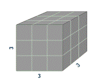
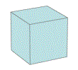
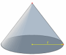
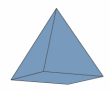
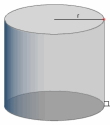
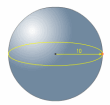
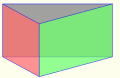

Volume is a measure of how much space an object takes up. For example two shoe boxes together have twice the volume of a single box, because they take up twice the amount of space.
Different shapes have different ways to find the volume.
For example, in a cube we find the volume by multiplying the three side lengths together.
In the cube above, the volume is 3×3×3 or 27. If you count the small cubes you will find there are 27 of them.
(See Volume of a cube.)
The volume of solid objects is measured in cubic units. For example in the cube above, if the sides are 3 meters long, then the volume is 27 cubic meters. If the sides were 3 feet long the volume would be 27 cubic feet. The most important thing to remember when calculating volume is that
We talk about the cube above having a volume of say 27 cubic meters, but there is a shorthand way of writing it. We write the letter for the unit with a superscript 3 after it, like this:
| "27 cubic meters" | is written as | 27 m3 |
| "27 cubic feet" | is written as | 27 ft3 |
Just like solids, liquids have a volume too. Just like solids, it is the amount of space it takes up, but obviously it has to be in some sort of container. With liquids we use different units, but the concept is the same.
Liquid volumes have units like liters, gallons, pints, and milliliters. They are all just measures of volume and the units can be converted from one to another. For example 10 gallons is the same volume as 1.34 cubic feet.
The easiest way to convert from one unit to another is to use the Google search engine. A little-known feature of it is that if you type in a conversion problem into the search box, it converts it for you automatically if it can figure out what you mean. For example if you type in "3.4 gal in cu ft" it will tell you 3.4 US gallons = 0.454514 ft3 .
Each type of solid has a page of its own showing the volume formula and applet:
 |
Volume of a cube |
 |
Volume of a cone |
 |
Volume of a pyramid |
 |
Volume of a cylinder |
 |
Volume of a sphere |
 |
Volume of a prism |